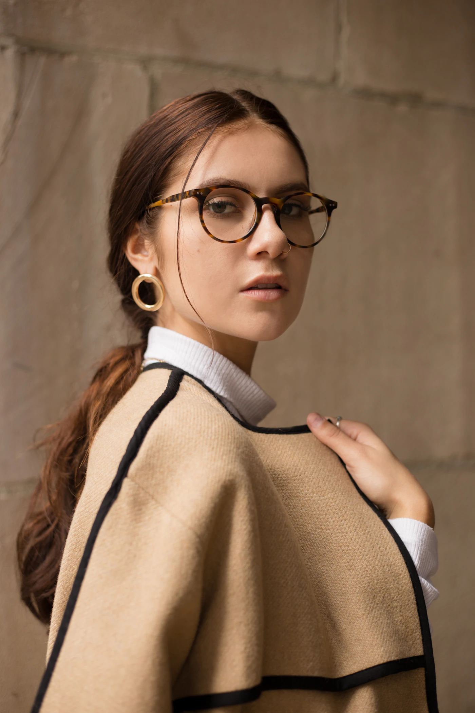

Ótica em Maringá · desde 2012
Enxergar bem,
do seu jeito.
Armações escolhidas a dedo, lentes de laboratório e atendimento sem pressa. Mande a foto da sua receita e receba o orçamento pelo WhatsApp.
Enviar minha receita- 12 anosem Maringá
- Ajustessem custo, sempre
- Até 10xsem juros no cartão

Receitaorçada pelo
WhatsApp

A ótica
Óculos certos começam com uma boa conversa.
Antes de mostrar armações, a gente pergunta como é o seu dia: tela, volante, leitura, sol.
Com a receita em mãos, indicamos a lente que faz sentido para a sua rotina e ajudamos a encontrar o formato que combina com o seu rosto. As medidas são tiradas aqui na loja, e o ajuste final é feito na entrega.
Depois disso, é só voltar quando precisar: aperto de parafuso, troca de plaqueta e limpeza ficam por nossa conta.
Fernanda LimaFundadora · Óptica responsável
Falar com a lojaProdutos e serviços
O que você encontra aqui.
Da primeira armação da criança à multifocal de quem já lê com o braço esticado. Escolha o assunto e fale direto com a gente pelo WhatsApp.
- 01
Óculos de grau
Armações de acetato, metal e titânio, com lentes antirreflexo e filtro de luz azul.
- 02
Óculos de sol
Proteção UV de verdade, com ou sem grau, inclusive com lentes polarizadas.
- 03
Lentes multifocais
Longe, meia distância e perto em uma lente só, com medição feita na loja.
- 04
Lentes de contato
Descartáveis, tóricas e coloridas, com orientação de uso e cuidados.
- 05
Óculos infantis
Armações flexíveis e resistentes, no tamanho certo para não escorregar.
- 06
Ajustes e consertos
Troca de plaquetas, hastes e parafusos, solda e alinhamento da armação.
Como funciona
Da receita ao óculos no rosto.
Você não precisa entender de lentes. Basta mandar a receita: a gente explica as opções em linguagem simples.
Começar agora01
Envie a receita
Tire uma foto da receita e mande pelo WhatsApp. Respondemos com as opções de lente e os valores.
02
Escolha a armação
Venha à loja experimentar os modelos. Tiramos as medidas do rosto para a lente ficar no lugar certo.
03
Retire ajustado
Avisamos quando o óculos estiver pronto e fazemos o ajuste final na hora, para não apertar nem escorregar.
Visite a loja
Venha experimentar.
Atendimento por ordem de chegada. Se preferir, mande uma mensagem e separamos alguns modelos para você.
Falar pelo WhatsApp-
Av. Brasil, 0000 · Loja 00
Zona 01, Maringá/PR -
Segunda a sexta, das 9h às 18h
Sábado, das 9h às 13h -
(44) 99999-9999
contato@oticamirante.com.br -
Pix, débito e crédito
Em até 10x sem juros no cartão